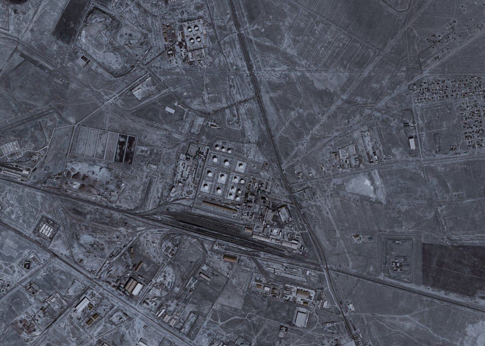
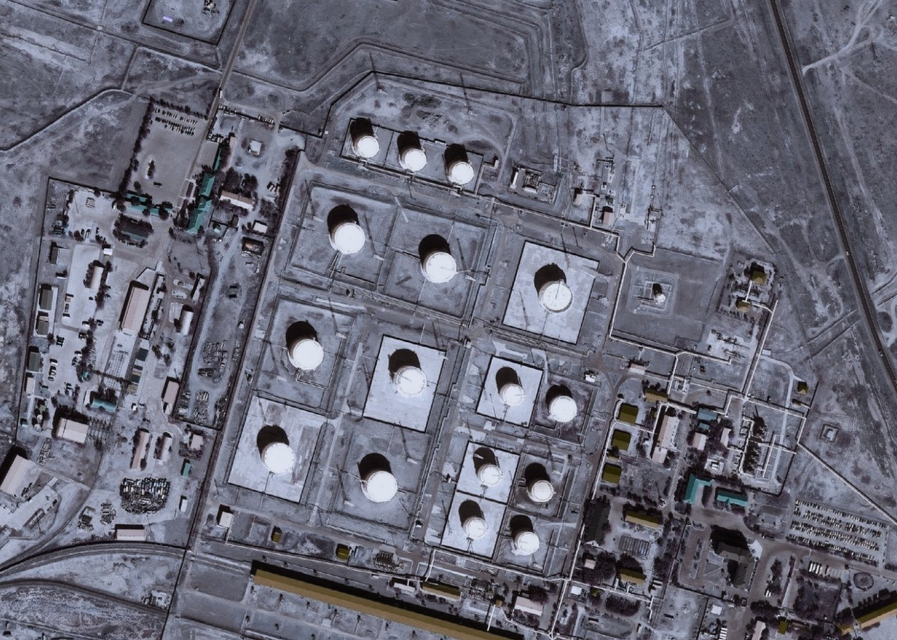

Снимок: Esri World Imagery (Maxar, Earthstar Geographics). Схема на снимке условная.
20 кг метана
каждый час
уходят в небо из шести РВС-5000. НПС им. Т. Касымова.
Решение: газгольдер и жидкостный эжектор вместо компрессора.
Листайте или запустите сутки
Резервуарный парк
6 × РВС-5000. CH4 85 %, C2–C4 10 %, инертные 5 %.
Днём крыши нагреваются
Фиолетовое облако: метан из дыхательных клапанов. Летом ×1,5.
175,2 тонны за год
Ночью резервуары вдыхают. 4 765 т CO2-экв в год, GWP 27,2.
Пары уходят в коллектор
Коллектор Г-150, газгольдер GH-1: 1 500 м³, +0,5 кПа.
80 % включает эжектор, 55 % выключает
Газ идёт в печь П-1 как топливо. Улавливается 95 %.